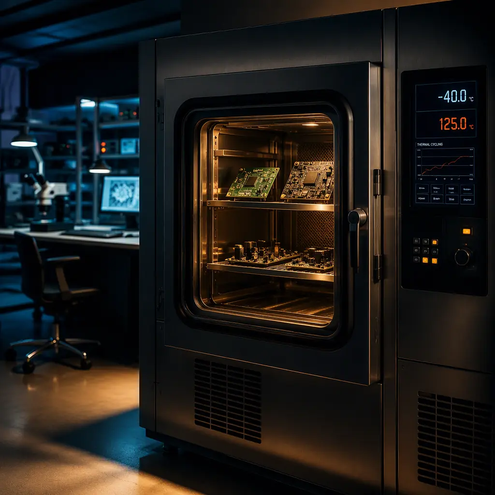
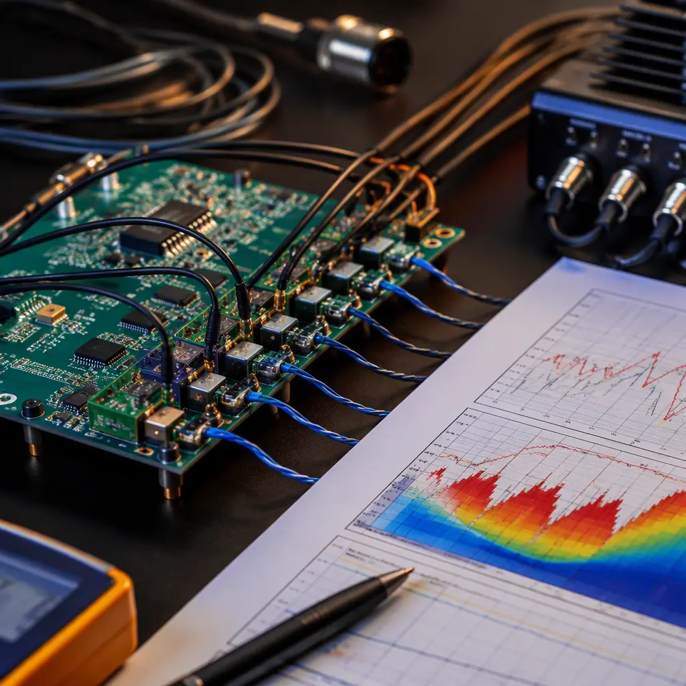
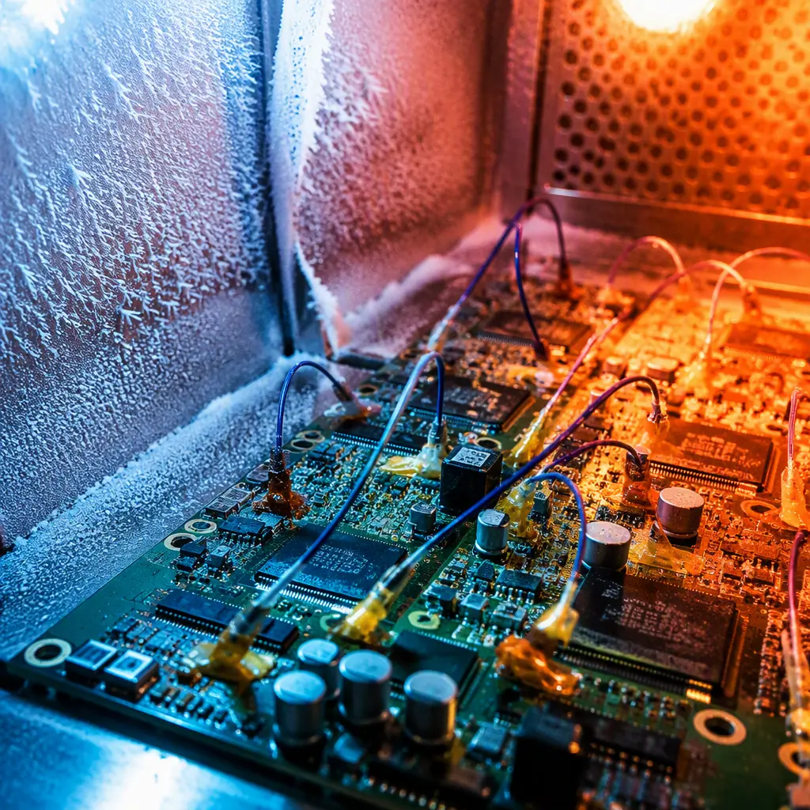

Temperature cycling is the most powerful accelerated aging tool available for PCB assemblies — and the most frequently mis-specified. A board in an automotive engine bay can see 10,000+ thermal cycles over its life; an outdoor telecom radio sees daily swings of 60°C or more for a decade. Each cycle drives differential expansion between the PCB, solder, and components, progressively fatiguing solder joints until they crack. Thermal cycling testing compresses years of field temperature history into weeks so you can find those cracks in the lab instead of the warranty period.
At Huaxing PCBA, our thermal cycling chambers run IPC-9701 and JESD22-A104 profiles around the clock, supporting qualification for automotive (IATF 16949), aerospace, and industrial customers. Across 80+ thermal qualification programs, we have correlated chamber cycles to field life for common board types — and the single biggest driver of early failures is not temperature range, but the choice of test profile and the interpretation of the data. This guide explains how thermal cycling actually damages solder joints, how to read a Weibull plot, and how to specify a test that answers your real question.

How Thermal Cycling Damages Solder Joints
Thermal cycling failure is a fatigue process driven by mismatched thermal expansion. The PCB laminate (CTE 14-17 ppm/°C in-plane), solder (CTE ~21-25 ppm/°C), and component packages (ceramic CTE ~6-8 ppm/°C, molded plastic ~10-17 ppm/°C) all expand at different rates when temperature changes. In a BGA, the ball connects a package that expands slowly to a board that expands faster; every degree of temperature change shears the ball slightly. Hundreds or thousands of cycles accumulate this shear strain into micro-cracks that grow until the joint opens.
Two material properties dominate the failure rate: the CTE mismatch between adjacent materials, and the solder's fatigue resistance. This is why ceramic packages (high mismatch to FR-4) fail thermal cycling far earlier than molded plastic packages, and why lead-free vs leaded solder selection matters — SAC305 and SnPb have different fatigue curves, and the transition to lead-free changed expected lifetimes for many product classes.
Key Insight: The damage per cycle scales roughly with the temperature swing (ΔT) raised to a power between 1.5 and 2.5 (Coffin-Manson relationship). A test at −40°C to +125°C (ΔT = 165°C) does roughly 4-8× the damage per cycle of a test at 0°C to +70°C (ΔT = 70°C) — which is why the profile must match your real environment, not just the "harshest number that fits on the datasheet."
IPC-9701 vs JESD22-A104: Which Profile Should You Specify?
Two standards dominate thermal cycling qualification, and they serve different purposes. Understanding the difference prevents both over-testing and false confidence.
IPC-9701 — Assembly-Level Solder Joint Reliability
IPC-9701 is the assembly-level standard for solder joint reliability, defining temperature cycling tests with recommended profiles: TC1 (0 to +100°C), TC2 (−25 to +100°C), TC3 (−40 to +125°C), and TC4 (−55 to +125°C). It specifies dwell times of 10-14 minutes at each extreme, ramp rates of 10-20°C/min, and sample sizes (typically 32 assemblies per condition for Weibull analysis). Crucially, IPC-9701 emphasizes monitoring solder joint resistance continuously and analyzing failure data with Weibull statistics — it is a data-generation standard, not just a pass/fail box.
JESD22-A104 — Component-Level Temperature Cycling
JESD22-A104 is the JEDEC component-level standard, defining conditions A through N with temperature ranges from −55 to +150°C and specifying 1,000 cycles as the typical test duration. It is the standard cited by semiconductor vendors for package qualification. Component-level results (a single package on a test coupon) generally overstate assembly-level life because the real board's constraint, adjacent components, and assembly process all add stress. Use JESD22-A104 for component selection data; use IPC-9701 for assembly qualification.
When to Use IEC 60068-2-14 Instead
For system-level or non-electronics customers, IEC 60068-2-14 (temperature change) is often the referenced document, with profiles like Nb (rapid change between two specified temperatures). It is functionally similar to JESD22-A104 but structured for general equipment. Many European industrial customers specify IEC 60068-2-14, so confirm the governing standard with your customer before quoting test quantities — the cycle counts and acceptance criteria differ from IPC-9701.
The Test Parameters That Actually Change Results
Two labs running the "same" −40 to +125°C test can produce 3× different failure times if these parameters differ. When you review a supplier's thermal test data, check these four details first.
| Parameter | Typical Range | Effect on Result |
|---|---|---|
| Temperature range (ΔT) | −55 to +150°C extremes | Dominant driver — damage scales with ΔT^1.5-2.5 |
| Dwell time at extremes | 10-14 min (IPC-9701) | Longer dwell → more creep per cycle → faster failure |
| Ramp rate | 10-20°C/min | Faster ramp adds mechanical shock component |
| In-situ monitoring | Continuous (IPC/JEDEC-9702) | Captures intermittent opens; post-test checks miss them |
Dwell Time: The Under-Appreciated Fatigue Driver
At high temperature, solder creeps — it slowly deforms under constant stress. Longer dwell at the hot extreme allows more creep relaxation per cycle, which paradoxically can either increase or decrease damage depending on the mechanism. IPC-9701's 10-14 minute dwell is calibrated to produce realistic creep damage; cutting dwell to 5 minutes to "accelerate" the test actually changes the failure mechanism and produces optimistic life predictions. Always confirm the dwell time in any test report you receive.
Air-to-Air vs Liquid-to-Liquid: Speed Has a Cost
Liquid-to-liquid thermal shock (e.g., MIL-STD-883 Method 1011) achieves ramp rates of 30-60°C/min by moving boards between hot and cold liquid baths, testing in minutes what takes hours in air chambers. But the rapid transfer adds a mechanical shock component and stresses conformal coatings and enclosures differently. For solder joint fatigue prediction, air-to-air thermal cycling is the standard; liquid-to-liquid is reserved for hermeticity and package-level screening. Mixing the two methods in one qualification program invalidates comparability.
Reading a Weibull Plot: The Data Behind the Pass/Fail
A thermal cycling report that says "passed 1,000 cycles" is nearly meaningless without the failure distribution. IPC-9701 requires Weibull analysis of time-to-failure data precisely because solder joint failures follow a distribution — some joints fail at 500 cycles, most fail around 2,000, and the "characteristic life" (η) and slope (β) tell you the risk profile.


Characteristic Life (η) and Shape Parameter (β)
The characteristic life η is the cycle count at which 63.2% of the population has failed; the shape parameter β describes the failure rate behavior. β > 1 indicates wear-out (increasing failure rate) — typical for solder fatigue, with values of 3-8 common. A report stating "η = 3,200 cycles, β = 4.2" tells you the design's median life and how tightly failures cluster. Two designs with the same η but different β have very different warranty risk at a 10-year horizon. This is the number your reliability engineer should quote, not "passed 1,000 cycles."
Sample Size and Confidence
IPC-9701 recommends 32 assemblies per condition — enough to fit a two-parameter Weibull with reasonable confidence bounds. A test on 3-5 boards gives a Weibull plot with confidence intervals so wide the result is advisory at best. When a supplier quotes a "qualified" result from fewer than 10 samples, ask for the confidence bounds. Our standard automotive qualification uses 32 assemblies per condition with 90% confidence interval reporting, per IATF requirements. See our IPC Class 2 vs Class 3 guide for how acceptance criteria scale with product class.
Key Takeaway: Thermal cycling data is only as good as its failure detection. Intermittent opens that appear only at temperature extremes — and heal at room temperature — require continuous in-situ resistance monitoring (IPC/JEDEC-9702 event detection). Post-test functional checks will miss the majority of these.
Design Choices That Extend Thermal Cycling Life
Every thermal cycling failure we have analyzed had a design contributor. These four changes have the largest measured impact on solder joint fatigue life.
Match CTE Where It Matters Most
The largest CTE mismatch in most assemblies is between ceramic components (6-8 ppm/°C) and FR-4 (14-17 ppm/°C). Options: switch large ceramic packages (BGAs, MLCCs) to molded plastic alternatives where possible; use a low-CTE laminate like a filled or polyimide system for boards with many ceramic parts; or add strain-relief. For boards running in extreme environments, our ceramic, PTFE & polyimide substrate guide details which laminates cut CTE mismatch most effectively.
Control Solder Joint Strain With Package and Board Geometry
Larger solder joints tolerate more strain before cracking: increasing BGA ball pitch from 0.5 mm to 0.8 mm roughly doubles the fatigue life of the joint under identical cycling. Similarly, thinner boards (0.8-1.0 mm) flex more and relieve strain at the joint, extending life vs a stiff 1.6 mm board — the opposite of the vibration design rule, which is why thermal and vibration requirements must be balanced together. Standoff height and solder volume also matter; our BGA assembly guide covers the process controls that maximize joint volume and consistency.
Underfill and Edge-Bonding for Extreme Profiles
For TC3 (−40 to +125°C) and harsher profiles, capillary underfill around BGAs distributes the CTE mismatch across a compliant adhesive layer instead of concentrating it in the solder balls — our tests show 3-5× life extension for underfilled 0.5 mm-pitch BGAs. Edge-bonding (applying adhesive along package edges) is a lower-cost alternative that captures 50-70% of the benefit for corner-dominant failures. Both add process cost and complicate rework — see our PCB rework & repair guide for how underfilled assemblies are handled when repair is unavoidable.
Avoid Placing Large Components at Board Edges and Corners
Board edges experience the highest strain during thermal cycling because the laminate's in-plane expansion accumulates over the full board dimension — the corners of a 300 mm board move roughly 5× more relative to the center than a 100 mm board's corners. Large BGAs, ceramic capacitors, and connectors placed near edges or corners fail earliest. The same placement rule serves both thermal cycling and vibration testing — keep heavy and high-CTE-mismatch parts within the central 60% of the board footprint.
How to Plan a Thermal Qualification Program
An effective thermal qualification program is sized to the product's environment and risk. The framework below scales from a low-volume industrial sensor to a high-volume automotive ECU.
Step 1: Define the Field Environment and Target Life
Convert the product's field temperature history into a test profile: count the expected thermal cycles over the design life (e.g., automotive underhood: 10,000+ cycles between −40 and +125°C; indoor industrial: 1,000-3,000 cycles between 0 and +70°C), then select the IPC-9701 or JESD22-A104 condition whose ΔT brackets your worst-case field exposure. Document the acceleration factor you are relying on — most programs target 2-3× field life in chamber cycles.
Step 2: Choose Sample Size and Monitoring Strategy
Use 32 assemblies per condition for Weibull-quality data (automotive/medical), or 10-16 for lower-risk industrial products. Wire event detectors to the highest-risk joints — BGA corner balls, large capacitors, connector tails — using daisy-chain test boards where available. Run functional tests at intervals (e.g., every 250 cycles) and at test completion. Pair thermal cycling with burn-in and ESS to separate early-life failures from wear-out.
Step 3: Analyze, Document, and Feed Back to Design
Fit a Weibull distribution to the failure times, report η and β with confidence bounds, and document the failure locations with X-Ray and cross-section. Every failure mode that appears in cycling should trigger a design review — if a specific capacitor position fails at 60% of target life, the fix is placement or package change, not accepting a lower target. Our failure analysis workflow covers the cross-sectioning and micro-analysis used to confirm failure mechanisms after cycling.
Procurement Tip: When comparing quotes for thermal qualification, ask suppliers for their chamber fleet (air-to-air vs liquid-to-liquid), their standard dwell times, and whether they run IPC-9701-style continuous monitoring. The cheapest quote is often the one running short-dwell, no-monitoring tests that will overstate your product's life.
What This Means for Your Next PCB Order
Thermal cycling is the fastest reliable way to learn how long your assembly will survive its real temperature environment — provided the profile, monitoring, and statistics are done right. At Huaxing PCBA, our thermal chambers run IPC-9701 and JESD22-A104 profiles with continuous event monitoring and Weibull-based reporting, integrated into IATF 16949-compliant qualification flows. Our engineering team reviews your field temperature environment at the DFM stage and recommends a test profile matched to your product class — before tooling is committed. Read our testing methods overview to see where thermal cycling fits in the full qualification sequence, or contact our engineering team to plan your thermal qualification program.